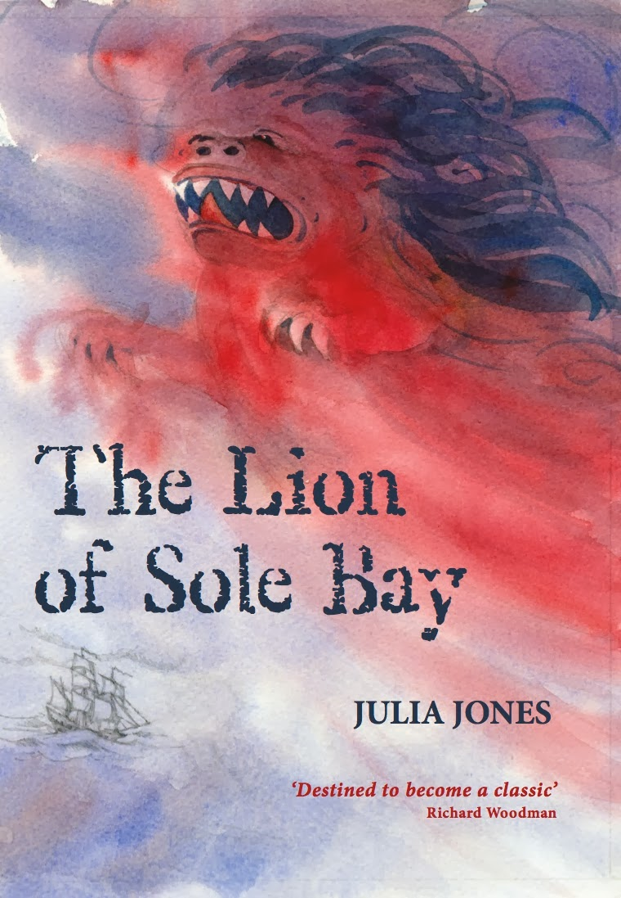

This morning, sensation seekers, I’m going
to talk about love and loneliness. I’ve just finished reading The Lion of Sole
Bay – another lost night – and I realized afterwards that that is what Julia
Jones’s books ‘for children’ are about. This is the fourth one I’ve read, of a
project that started as a trilogy, and the subtext is getting ever clearer.
(Which is not to say, naturally, that I’m
right. Anybody, up to and including the author herself, is entitled to
disagree. All I’d really like to insist on is that you read them.)
Julia’s child characters, let’s say, sprang
originally from her reading of Arthur Ransome. Like me, she must have been
sucked, inveigled, seduced into a world that I (although not necessarily she) certainly
didn’t fully understand and certainly had no cultural part in. Without wishing
to sound in any way threatened by it, it was a world of unthinking wealth and privilege
that I could clearly never enter. A little later I went to grammar school,
where I was one of only two working class boys. Weird.
Also weird in hindsight is the fact that
the other boys were almost entirely the sons of naval officers, and therefore
spoke an English which I had to emulate asap or get mocked to death – but it was
never a problem. Like the world of John Walker, the Blackett girls, Dick and
Dorothea, they just were. Different
but the same. Ransome’s lot had boats, I had the Sea Scouts. My school compatriots
spoke like something off the BBC, but I learned ’em how to sail. Any bullying I
suffered came from the older boys, and a couple of the teachers.
Julia’s characters live in a different
world again. Some of them are dirt poor, without the benefit of what our
Government so pathetically and offensively insists on calling ‘hard-working’
parents. Some of them, indeed, are in care, some of them have health problems,
some of them have mums and dads (or not) who are on the verge of going under.
 |
| The best sort of trilogy. Roll on Part Five! |
{kind=link}
But she involves them in situations that
are the backbone of the Ransome books. They interact, essentially, with each
other. Adults range from the bizarre to the extraneous, but the children are on
their own. If not duffers won’t drown. But by God (to quote another favourite
author) – no man is an island.
Julia’s key characters, unlike Ransome’s, have
extremely subtle needs. Above all things they know (whether in words or not)
that they need love, and Ms Jones understands from the bottom of her soul that love
is help. She turns the story screw to make that need grow greater all the time.
Not in a melodramatic way at all, however. Julia’s stories tend to make me
actually cry.
The construct of The Lion of Sole Bay is
extraordinary, but achingly simple. A boy called Luke, whom we know of old, is
left to have a longed-for holiday alone with his father Bill while his extended
and fragmented family go off abroad for their own ‘trip of a lifetime.’ Bill
lives on an old fishing boat, and works in the local boatyard, where on the
night he’s due to meet Luke, he actually meets a little girl called Angela. She
is an emotional outcast, hanging on to a gang of older boys, with whom she
manages to accidentally pull a propped-up boat down on to Bill, which comes
very close to killing him.
The gang run off, but Angela stays. She is
one of the school’s hopeless ones; friendless, apparently feckless, probably on
the spectrum, a heavily-bullied dimwit, always in trouble, much despised. She
is terrified of the police, but when she knows that they are coming, she stays
with Bill, and cradles him, and dares to hold his hand.
She has to run at last, of course. But
learns later that Bill, now in intensive care, mistook her for an angel.
Angela, known derogatorily as Ants (the other kids like to publicly pull her
pants down to check for the insects that must be crawling in them because she
is incapable of being still) has found her name at last, a name that she has
subconsciously ached for, an identity that can feed her soul. Angel.
Ants and Luke, however, are not the only
damaged ones in this story. Alongside Bill’s boat, for some time, has lain a Dutch
motor barge called Dree Vrouwen (Three Women) manned (irony) by a mad fascistic
politician called Elsevier, her mentally ill follower Hendrike, and Hendrike’s
thirteen year old daughter Helen. These three women have come across the North
Sea to liberate the figurehead of a Dutch warship involved in the Battle of Sole
Bay, in 1672. It is now the proud sign of a roadside pub at the head of the
creek, but to Elsevier it is the material exemplar of an ancient crime.
Her own planned crime – in her eyes, the
reversal of an ancient wrong – can only be carried out on a certain tide. And
Elsevier, although mad, is a great general (she thinks), and completely
ruthless. She controls Hendrike with herbal potions, fungi, and illegal drugs.
She controls Helen through blackmail (Helen loves her mother and must protect
her). And she carries a gun. A November the Fifth party will be the perfect
cover for the heist.
Luke, Angel, Helen are thus thrown together
– to hate and mistrust each other roundly. Bill lies in hospital, while other
adults are helpless and disbelieving. The North Sea, and the late autumn gales,
are waiting hungrily. I’m telling you, they will be horrible.
As well as the sea, Julia Jones understands
the horror of the human condition, and how utterly cruel life can be. But she
also understands redemption, inside out and backwards. And she is an absolute
master (mistress? Ask Elsevier) of dramatic tension. Some scenes are more
thriller than children’s story. But to categorise this book as either misses
several points.
The children and the adults in this novel,
this trilogy-plus, all need love. Their loneliness is awe-inspiring. With
calmness and power, without a jot of sentimentality, Julia Jones gives it to
them. All hail.
Crassness
alert.
It would be silly not to mention my own
latest book, however much I’m lost in admiration for Ms Jones’s. It’s the first
of a series of novellas about Nelson, and it was popped out by Endeavour Press
on March 1 almost without my ‘knowledge or consent.’ Not that I’m complaining –
I love their style. It might sound odd, but I’m also going to tell you this: An
academic friend, whose terrific thesis on Woodes Rogers has just secured him a
doctorate (and will be published soon), and whose father won the VC in the navy
during the war, emailed me within twenty hours to say:
Dear Jan, Just a quick note to say I thought this was brilliant
– best thing you have done (in my ever so humble opinion) for years you old
bugger – almost made me admire Nelson too!
So do yourself a favour (or me, at least) and
lash out £1.99. Immediately! It’s called Nelson – The Poisoned River